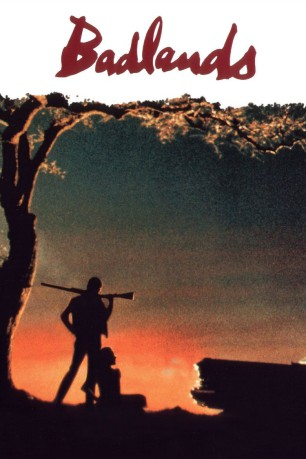

#11479 Badlands - Zerschossene Träume
Alternativ: Badlands (Englischer Titel)
 
 IMDB-Wertung: 7.9 / 10
IMDB-Wertung: 7.9 / 10  Metascore: 93
Metascore: 93 
Kit schlägt sich als Müllmann in einer öden Kleinstadt durch. Als er sich in die junge Holly verliebt, erschießt er ihren Vater, der gegen die Beziehung ist. Es beginnt eine Odyssee durch die "Badlands" von Montana. Terence Malicks Film "Badlands - Zerschossene Träume" ist von der wahren Geschichte des Charlie Starkweather, einem jungen rebellischen Straftäter aus den 50er Jahren, inspiriert.
Jahr: 1973
Dauer: 93 Minuten
FSK: 16
Land: USA Studio: Warner Bros A Warner Communications CompanyTonspuren:
Untertitel: Deutsch,
Auflösung: 720p (1280x688) Größe: 3348 MB
Genre: Drama, Krimi
Regisseur: Terrence Malick
Drehbuch: Terrence Malick
Soundtrack: George Aliceson Tipton
Darsteller:
 Martin Sheen als Kit
Martin Sheen als Kit Sissy Spacek als Holly
Sissy Spacek als Holly Warren Oates als Father
Warren Oates als Father Ramon Bieri als Cato
Ramon Bieri als Cato- Alan Vint als Deputy
 John Carter als Rich Man
John Carter als Rich Man Emilio Estevez als Boy Under Lamppost (uncredited)
Emilio Estevez als Boy Under Lamppost (uncredited)- Terrence Malick als Caller at Rich Man's House (uncredited)
 Charlie Sheen als Boy Under Lamppost (uncredited)
Charlie Sheen als Boy Under Lamppost (uncredited)- Gary Littlejohn als Sheriff
- Bryan Montgomery als Boy
- Gail Threlkeld als Girl
- Charles Fitzpatrick als Clerk
- Howard Ragsdale als Boss
- John Womack Jr. als Trooper
- Dona Baldwin als Maid
- Ben Bravo als Gas Attendant
- Li Po Lung als Chinese Kid (uncredited)
Datei: X:\1973\Badlands - Zerschossene Träume (1973, FSK16, 1280x688).mkv seit 16.07.2019
Festplatte: Gemischt-01+Anime
 Es gibt insgesamt 30 Filme in der Gruppe '1973'
Es gibt insgesamt 30 Filme in der Gruppe '1973'